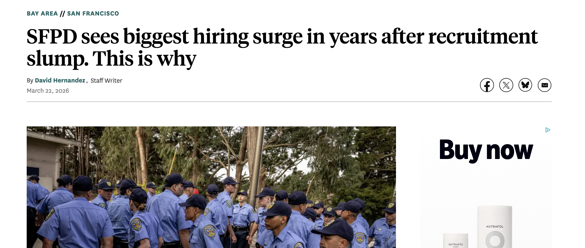
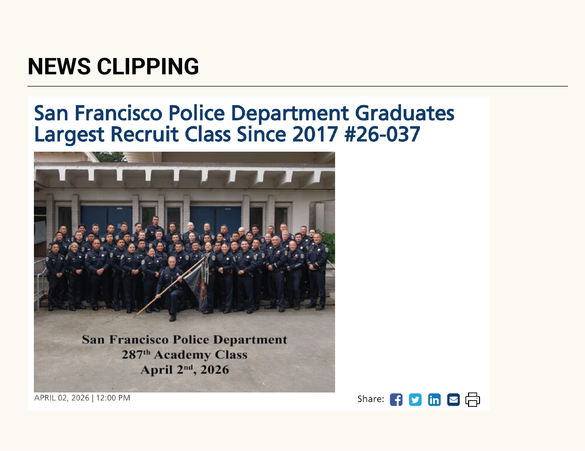
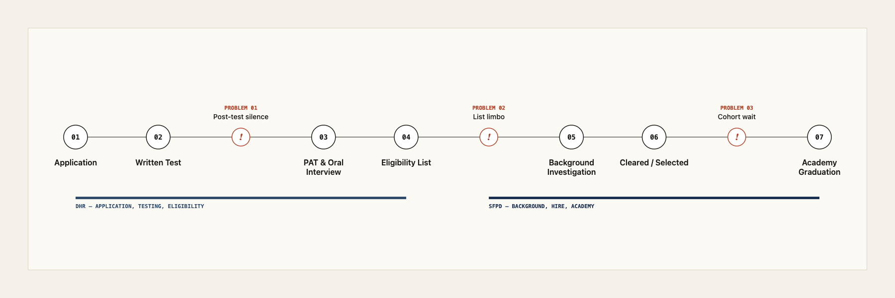
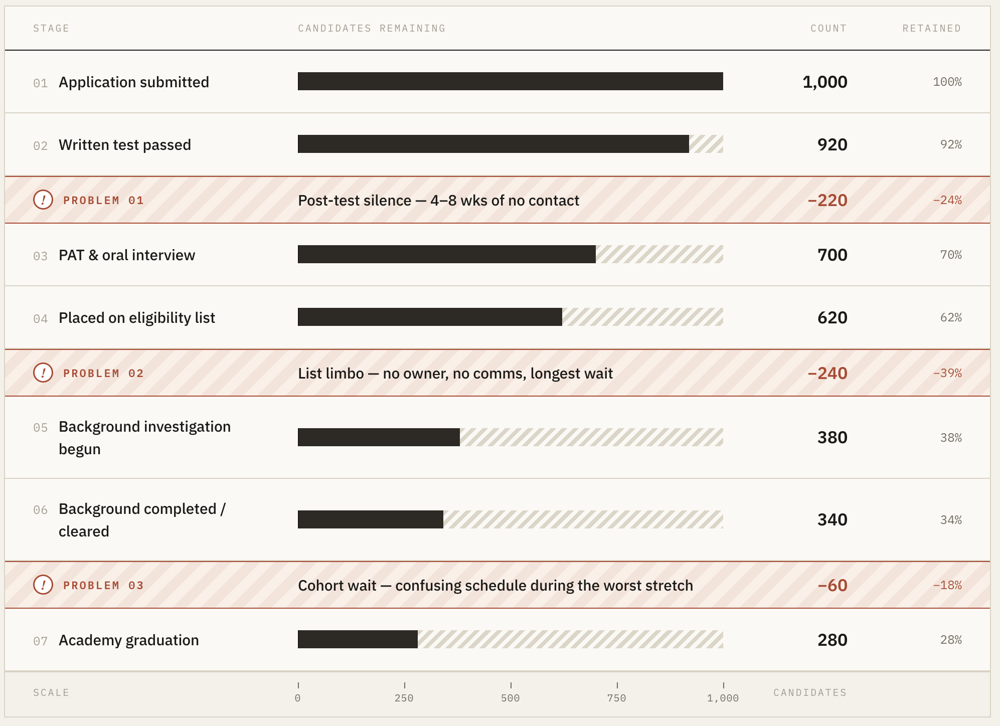
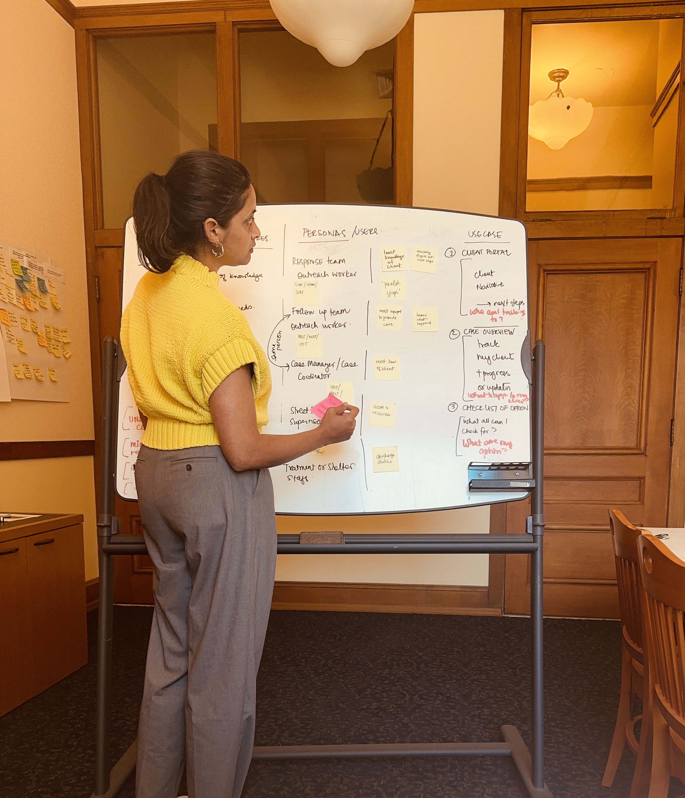
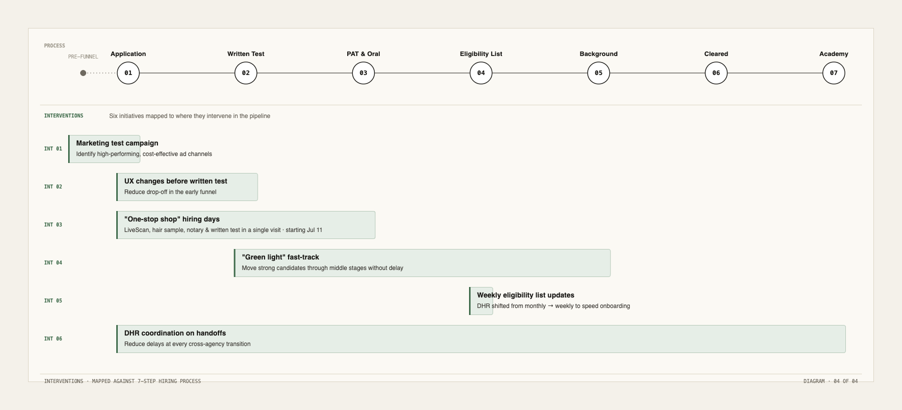
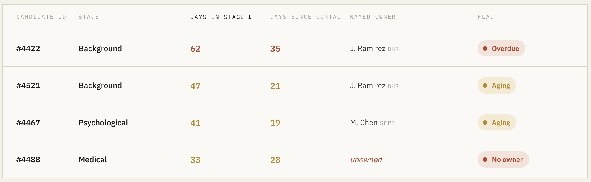
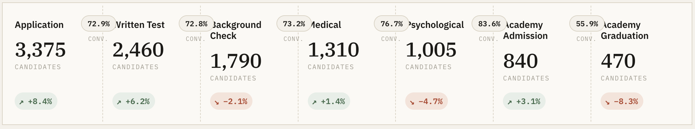
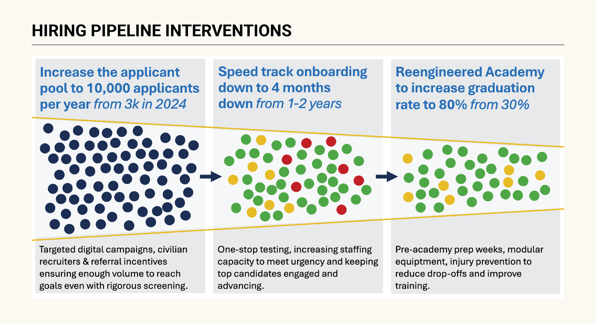

The problem
When I was brought on the project, I looked into why the hiring process was taking over 2 years. Looking more closely, the hiring funnel was leaking into three distinct breakdowns across recruitment, onboarding, and the academy. I shifted the brief to 'why is the pipeline losing the strong candidates we already have?'

Methods used
Funnel analysis, segmentation, and dropout interviews
Eighteen months of applicant data showed the 70% drop-off broke into three distinct stages: recruitment, onboarding and academy. Strong candidates often get stuck mid-pipeline. The background-investigation stretch was a paper-based, appointment-bound bottleneck. We responded with a 'green-flag' method: identify strong candidates early, especially senior lateral applicants, and route them to white-glove service through the most delay-prone stages.

I interviewed strong candidates who quit between application and academy. They pointed to weeks of silence after background checks, confusing evaluation timelines, no communication during the longest waits, and the hardest delays: scheduling medical and psychological evaluations. Candidates left because they thought the city had forgotten them. We responded by expanding the panel of medical and psychological providers candidates could use within the city's public health system, cutting appointment-driven delays at the source.
Candidates were leaving because of poor communication and long wait times.
Targeted digital marketing tests
I reviewed all ads running across platforms and tested recruitment tactics with police recruiters at career fairs. Booths, keychains, and generic ads missed Gen Z. Recruitment needed a targeted sales approach to attract the right entry-level candidates. Only ~49 laterals applied in 2024, so we expanded targeted lateral campaigns to specific cities that have the same qualifiers as San Francisco.

Candidate journey mapping
I signed up to be a police officer after seeing a targeted ad. I mapped the candidate journey by playing a candidate myself and going through the process across the police department and HR. I received the drip campaign ads, sat through tests (which I didn't complete), and looked into communications at each stage. I also spoke to recently hired candidates and mapped about 4-5 other journeys.
More than half the handoffs lacked a named owner, a shared service expectation, and a common view of candidate progress. Leaders saw the system gap for the first time from the candidate's perspective.
The sharpest gap was between the initial tests (owned by HR) and the in-person interview (at the police department). Strong candidates had no human touchpoint in between. We paired each strong candidate one-to-one with a dedicated recruiter through that window, giving them white-glove service where the funnel was bleeding most.

Interventions
Shared hiring dashboard
A live, shared dashboard combined police and HR data, with the candidate at the center: funnel KPIs alongside community-impact metrics on crime stats, jointly owned by both agencies. We pinned the candidate board to a large screen running in the police department, where recruiters could glance at it throughout the day. The gamified approach was well received by the team; they wanted to see the funnel move.


Pipeline-stage interventions

Outcomes
The pipeline now produces officers at a sustainable rate, and the system is owned by the agencies running it.
- First net positive growth in sworn officers since the 2020 pandemic.
- Reframed the question from "hire faster" to "what should the pipeline produce," now an active conversation in city leadership.
- Dashboard and service blueprint owned by the police department and HR, so the capability survives the Mayor's Office of Innovation's departure.
Context
Stakeholders. Core sponsors: Mayor's Public Safety Chief, Police Chief, HR Department leadership, Mayor's Office of Innovation Director. Core partners: police recruiting team, HR background-check team, police data team, academy training staff.
Timeline. Feb 2025 – Oct 2025.